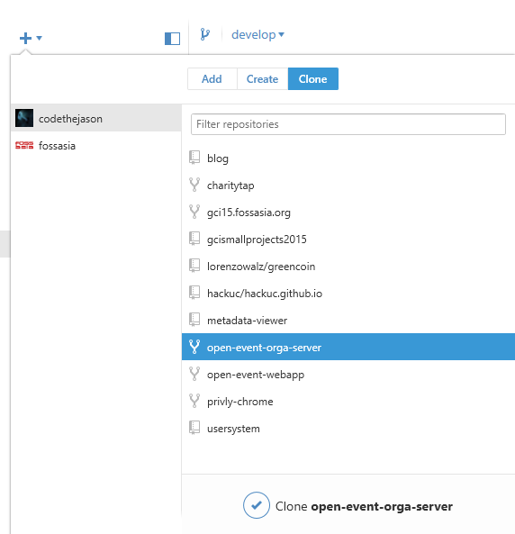
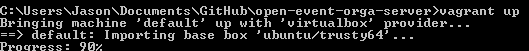
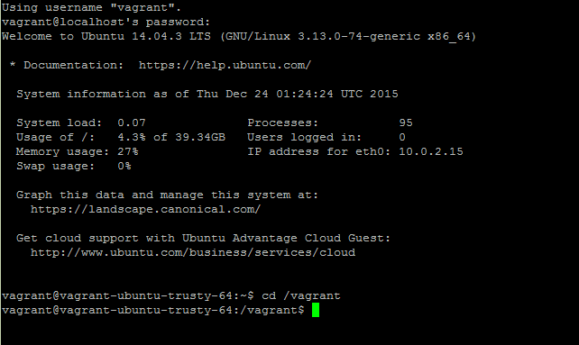
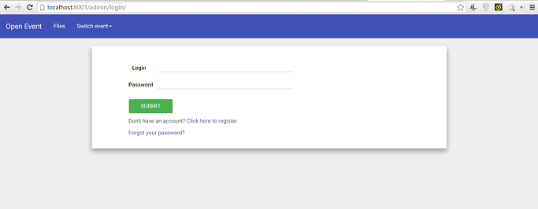
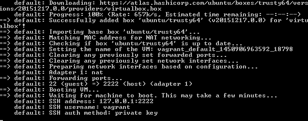

Today, I will be teaching you how to locally setup the open event orga server which manages all the data of an event. I will let you know the exact process I went through.
Make sure you clone the repository from Github into your default folder. You should also fork the repository if you are thinking of contributing to it. Cloning the repository first is much easier since there is a preset Vagrantfile.

At this point, go to Vagrant and install the latest version. Afterwards, navigate to VirtualBox to install VirtualBox 5 for Windows. Restart your computer after the installation.
Go to your command prompt and type in vagrant up in the open event orga directory to initialize the setup process. The default operating system is Ubuntu Trusty LTS (you can use another OS if you would like). Nevertheless, you should see this after running the vagrant up command:

After waiting three to ten minutes, your virtual machine will be ready. Go into an ssh client (for example PuTTy) and login to the server using the following credentials:
host: localhost or 127.0.0.1
port: 2222
username: vagrant
password: vagrant
Navigate to /vagrant by typing in cd /vagrant. You should see something like this:

To avoid confusion, exit out of any command prompts. At any point, if you want to shut down the VM, type vagrant halt in the open orga server directory.
Now, create the python database given in the create_db.py file and start the Nginx server by running these commands:
python create_db.py
python manage.py runserver -h 0.0.0.0 -p 5000
#Address is 0.0.0.0 so the app binds to the public ips on the box (for accessing it on our machine)
You are done! View the web application at localhost:8001 on your desktop. If you would like to keep the app running, you can install screen and use it to keep it in the background even while you are not on the VM.

One issue I had was that I was stuck on this screen for a while:

To fix it, you must restart your computer and boot into BIOS (usually by function keys or a special power button on the computer). Afterwards, select virtualization and enable it.
Other than that, I did not have any issues deploying the application. Be sure to have the latest versions of Vagrant and Virtualbox and you will be able to finish installing the server successfully. Good luck on your installation and have a blast contributing!
23 Dec 2015 #orga-server #github #setup #virtual machine #windows